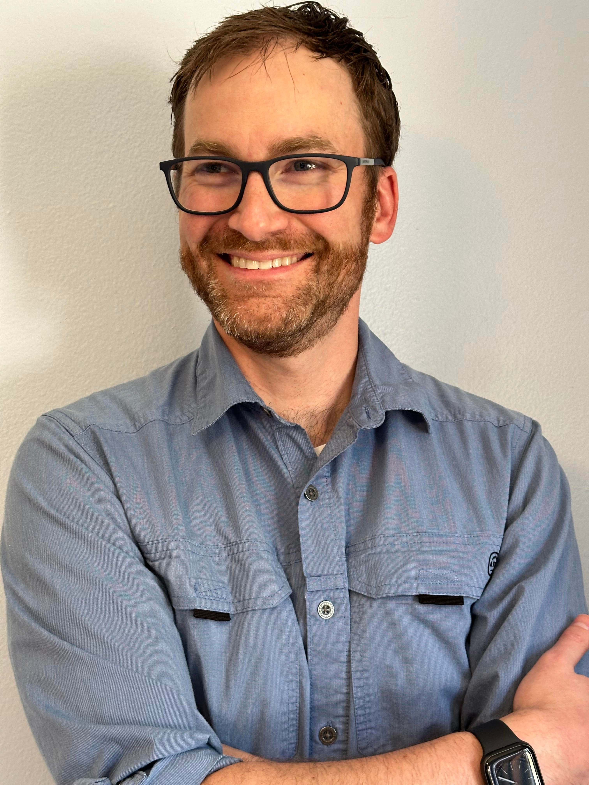

Multidisciplinary engineer with 15+ years bridging aerospace and software — from high-fidelity flight simulators and radar digital twins to cloud-native platforms at enterprise scale. I thrive at the intersection of systems thinking and hands-on implementation, and I’m always drawn to problems where the engineering has to be right.

Master of Science
Old Dominion University, Norfolk VA
Specialized in Flight Dynamics & Control Systems
Thesis: Designed & Built and F-16 Flight Simulator
Bachelor of Science
George Mason University, Fairfax VA
Programming
DevOps
Hardware
Operating Systems
Web
Exposure
July 2024 - October 2025
Building Tools for an entire company.
June 2023 - June 2024
Develop Software, contribute to Open Source, and function as a technical leader.
January 2018 - May 2023
Develop Software, and coach teams to adopt DevSecOps practices at an enterprise scale.
April 2013 - January 2018
Develop Simulation Software & Lead a Modeling & Simulation Team of twenty-five.
May 2012 - December 2012
Team research project
May 2010 - January 2012
Software Engineer Internship
Non-destructive Evaluation and Testing
AI/ML - PyTorch
Open Source Deep Learning for Identifying Tornadoes via radar imagery.
For fun, I am working with a friend to use old GPU equipment around my home to use an open
source dataset and teach myself how to do some basic supervised learning using Python
PyTorch.
https://github.com/deepnado
Python, AWS, Open Source
Open Source Web Application Deployed via AWS.
I built a web application using Python Flask to enable friend groups to collaboratively
administer Dedicated Video Game Servers.
https://github.com/agentsofthesystem
Cloud
A proven way to advance cloud career.
It is thanks to this challenge that you are on this page, even on this entire site.
The Cloud Resume Challenge is a multiple-step (It's roughly 16 steps) resume project
which helps build and demonstrate skills fundamental to pursuing a software career.
Learn more
FAA - Private Pilot - Instrument Airplane
I am a trained private pilot, and while not entirely relevant to a software background sharing it here shows that when I dedicate myself to something, it becomes a reality. I am very proud of my wings and always enjoy talking about aviation.